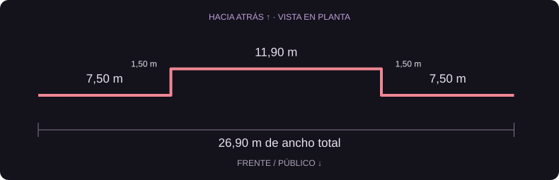
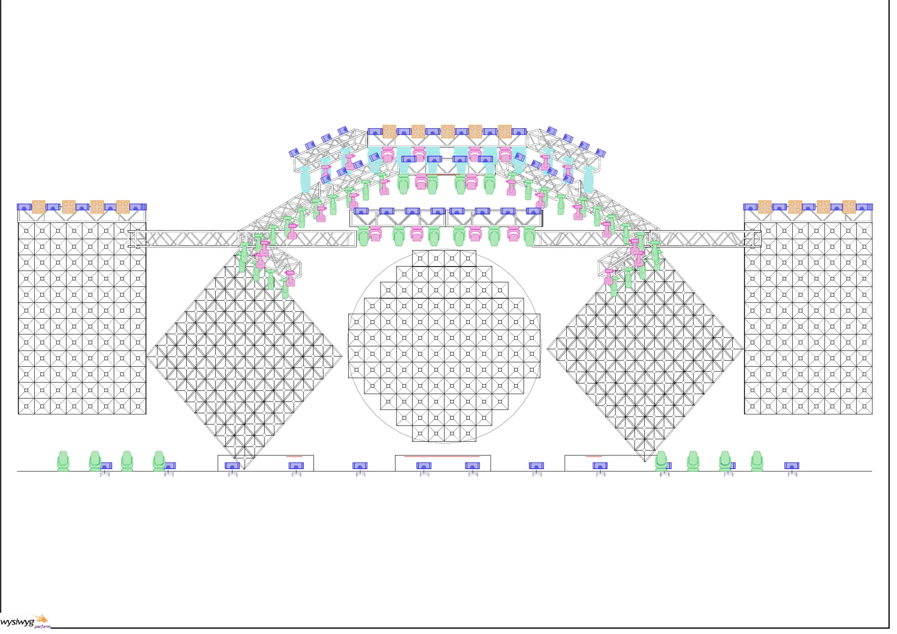
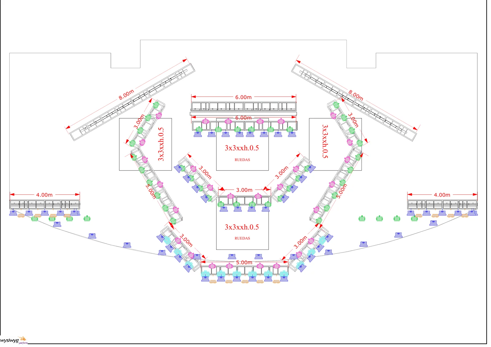
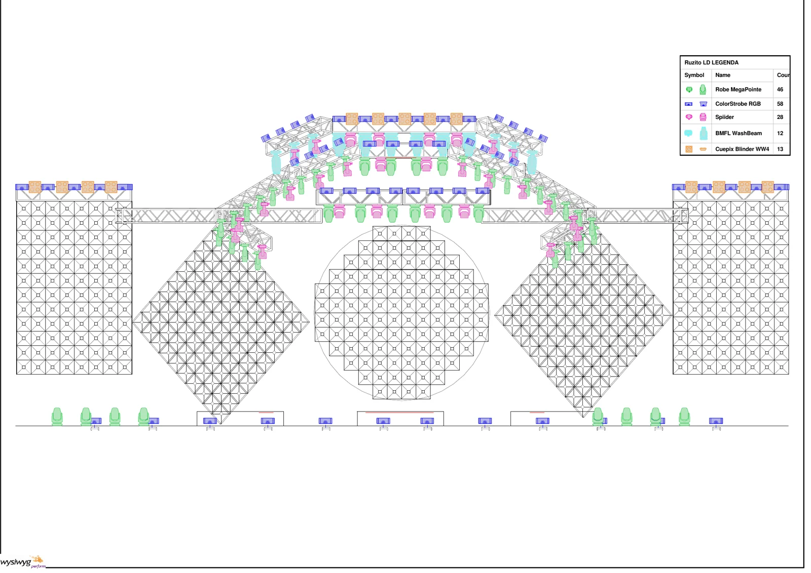

AMARANTA / EXPOFOLK
La luz también
es escenario.
La estructura, las cinco pantallas y las 157 luminarias del plano final, junto a 48 barras LED individuales de 5 m detrás de los rombos y la chacana. Tres zonas de 16 barras; 240 m lineales.
Explora la propuesta ↓48 barras × 5 m · 3 zonas de 16
Cada rombo: 16 barras · 80 m. Chacana: 16 barras · 80 m, escalonadas según su contorno y ubicadas en su plano posterior.
Contorno posterior actualizado con las medidas confirmadas: 26,90 m de ancho y 1,50 m de retranqueo central. Resto de la planta según los planos finales. Alturas estimadas por proporción del frontal: truss superior ≈10,4 m sobre el escenario. Barras individuales de 5 m, con diferentes alturas de colocación detrás de la chacana. Suspensión y fijaciones pendientes de definición.
ESTRUCTURA POSTERIOR · MEDIDAS CONFIRMADAS
El centro, 1,50 m más atrás.
7,50 m a la izquierda + 11,90 m centrales + 7,50 m a la derecha: 26,90 m de ancho. Los dos retornos de 1,50 m son desplazamientos en profundidad, sin desnivel vertical.
La línea rosada de la vista Planta identifica el contorno posterior actualizado. Altura y distancia absoluta al frente todavía estimadas. Se mantienen 48 barras de 5 m: 240 m lineales.

PLANO FINAL · EQUIPAMIENTO
157 luminarias + 48 barras LED.
Modelos visuales simplificados por familia, distribuidos según la planta y el frontal. Los haces ilustran la escena.
16 tramos de truss · 2 pantallas laterales, 2 rombos y chakana central · 4 tarimas de 3 × 3 × 0,5 m, las 2 centrales con ruedas. Alturas y profundidad absoluta estimadas; centro situado 1,50 m detrás de los laterales; no representa una solución de rigging validada.
DOCUMENTACIÓN FINAL
La planta y el frontal.
El montaje completo.
Los planos finales definen las tarimas, el rig de iluminación y las luminarias. El contorno posterior incorpora las medidas confirmadas de 7,50 + 11,90 + 7,50 m y 1,50 m hacia atrás en el centro. El frontal guía las alturas estimadas; el video conserva la referencia visual de las barras LED.

Frontal final · estructuras
Disposición frontal de pantallas y trusses. Alturas estimadas con la escala de los tramos acotados en planta.

Planta final · estructuras
Tramos de 3, 4, 5, 6 y 8 m; frente curvo y cuatro tarimas de 3 × 3 × 0,5 m.

Plano final · luminarias
46 MegaPointe · 58 ColorStrobe · 28 Spiider · 12 BMFL · 13 blinders.
Amaranta · tubos LED pixel
Video de Instagram de LIGHTMAN. La publicación original menciona 320 tubos; esta propuesta utiliza 48 barras de 5 m (240 m lineales), en tres zonas de 16 detrás de los rombos y la chacana.
DEL ESTUDIO AL MONTAJE
Estructura y equipos reconstruidos a partir de los planos finales. Las alturas se estiman a escala del frontal; el siguiente paso es definir la suspensión de las barras y comprobar las alturas reales de montaje.
Estudio visual 07 · 48 barras de 5 m · 240 m detrás de rombos y chacana